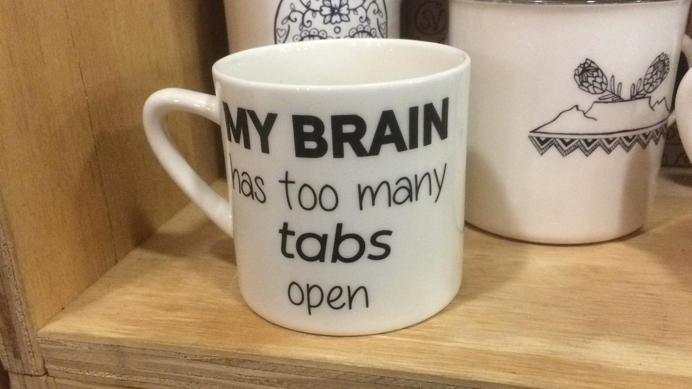

My Career change journey
I would like to share with you, my journey thus far to change careers.
I decided a few years ago that working as a sales consultant was no longer working for me. So I decided to find another career that would be challenging, mentally stimulating and would fit in with my values. I decided to go in the direction of software engineering, but not set myself into any specific speciality until I had actually worked in several different fields or have found one specific field that resonates with me. I chose software engineering because it's a combination of creation and maintenance. Each company and each role has their balance of these two elements. Personally, I enjoy both creating and fixing things so either way I believe Software engineering has the potential to be fantastic!
In Dec 2018, I started a course: Introduction to Python programming. It's a Georgia Tech course via the online education platform edX. It consists of 4 smaller courses, which together form a professional certificate. It took me a little over a year to complete but I did so with fantastic grades and a great recommendation from Georgia Tech's Executive Director, David Joyner. This recommendation can be found on my Linkedin page.
The course covered the fundamentals of computer programming with Python as the programming language:
Upon completing this course, I went onto to start a Harvard course: CS50's Introduction to Computer Science. As this course also covers the fundamentals, it overlaps with the prior course. What has made this course interesting for me is that it covers this material over several programming languages:
- Scratch
- C
- Python
- SQL
- HTML, CSS & JavaScript
A great thing about this course is that because it covers the programming language C, it also touches on:
- * Memory allocation
- * The importance of not wasting computer memory when writing code (memory leaks).
- * File pointers
The course also covered general fundamental topics not covered in the Georgia Tech course:
- Call Stacks
- Hash tables
- String-linked lists
- Command line arguments
I've definitely appreciated both courses for different reasons. Both have added substantial value to my learning development and my understanding of the Computer programming fundamentals. As of October 2020, I am currently working through the Web track part of the course, which called for me to create a website with 4 linked webpages.

I can say I've definitely taken some inspiration from a particular podcast . The stories are interesting and its clear that the host, Jack Rhysider, is both experienced and passionate about what he does. His content is exciting and interesting, to the point even I've considered going into cyber security.
Something that I do find appealing about the Software Engineering (and Information Technology as a whole) is that there are so many avenues and career possibilities. Growth and diversity is definitely encouraged. So if you get bored or want a little change, you can try a different avenue. You can keep learning and growing into different areas of the industry until you find something you personally resonate with.
Personally I have enjoyed working with Python, so I'm definitely interested in exploring Artificial Intelligence and Machine Learning. Cyber security is definitely interesting too. I am keen to start as a Junior Software Developer, learn the relevant languages & tools on the job and take it one step at a time. I love the idea of producing content that will bring value to others and to invest my time and passion into a business who are genuinely passionate about both their community (local and global) and their client base.